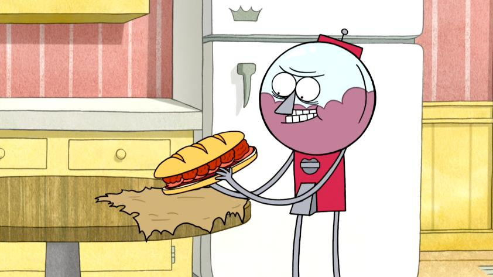

Sandwich of Death

Description:
The Sandwich of death is a very popular dish from the hit animated series "Regular Show". This is an ancient
recipe created and protected for thousands of years. Served at the Death Kwon Do Pizza and Subs shop, this
recipe has become a local favourite.
The sandwich is made on a hoagie style sandwich bread, topped with ham, meatballs and sauce. Be careful
as not taking the necessary measures could mean you untimely demise.
Ingredients
- 5 cloves fresh garlic. separated
- 1 medium yellow onion, minced
- 2-3 Tbsp olive oil
- ¼ tsp dried red pepper flakes
- 3 Tbsp tomato paste
- ½ tsp dried oregano
- 28 ounce can whole San Marzano tomatoes
- 7 ounces of water
- Fresh basil
- Salt
- Pepper
- Fresh parsley
- ½ cup ricotta cheese
- ½ cup panko bread crumbs
- Zest of 1 lemon
- 1 large egg
- 2 ounces parmesan cheese
- 1 pound ground pork
- Vegetable oil
- Hoagie sandwich roll
- Deli ham
Method
- Start by making the sauce.
In a sauce pan add ½ a minced onion along with some olive oil and saute for 2-3 minutes before adding 3 garlic cloves, 3 Tbsp tomato paste, ½ tsp dried oregano, and ¼ tsp dried red pepper flakes.
Mix to combine for 30 seconds.
- Add a 28 ounce can of whole San Marzano tomatoes to the pan along with 7 ounces of water.
Using a potato masher, slowly mash the tomato sauce until it's smooth.
Mix to combine. Add 1 sprig of fresh basil. Keep at a simmer over low heat for 45-90 minutes.
Season with salt and pepper.
- For the meatballs, saute ½ a medium onion along with 2 cloves of freshly minced garlic.
Once fragrant, take off heat and set aside.
- To a large bowl add fresh parsley and basil along with ½ cup ricotta cheese,
½ cup of panko bread crumbs,
the zest of 1 lemon, 1 large egg,
2 ounces of parmesan cheese and 1 pound of ground pork (or ground meat of choice),
and your cooled onions and garlic.
- Mix everything together with your hands and then form into balls.
- Over a medium high heat, heat some vegetable oil and then add your meatballs and brown for about 2 minutes on each side.
Once they are browned, finish the cooking by adding them to a wire rack on a rimmed baking sheet and bake at 375°F for about 20 minutes.
- Slice your Hoagie roll in half lengthwise and then add a layer of sauce and top that with a row of deli ham.
Next, add your meatballs and then the other half of the sandwich bread.
- Serve and enjoy!